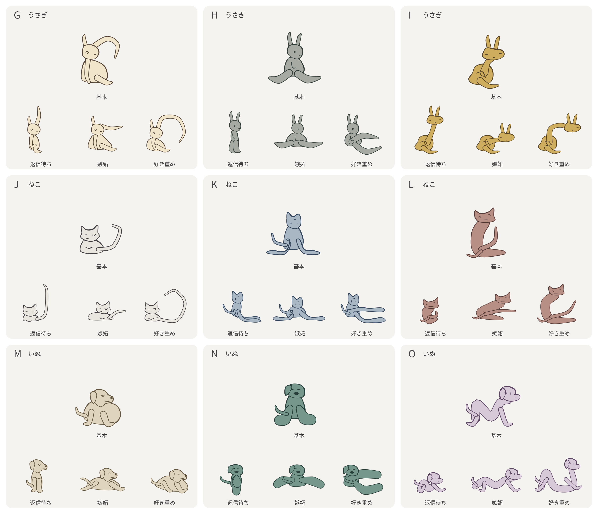

新しいキャラクター候補
G〜Oから、固定する1体を選んでください。
旧スタンプがダメだった5つの理由
- 同じ丸い体に飾りを足し、シンプルでシュールな可愛さを外した。
- 笑顔や困り顔にとどまり、返信への不安・嫉妬・好きの重さが伝わらなかった。
- 動くことは確認したが、気持ちが伝わり使いたくなる内容かを確かめきれなかった。
- キャラの採用確認で止まれず、台詞・動き・16種の制作まで進めた。
- 動画を見るための確認サイトに、余計な機能と不要なZIPを盛り込んだ。

G〜Oから、固定する1体を選んでください。
